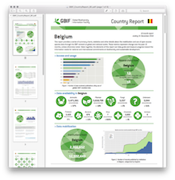
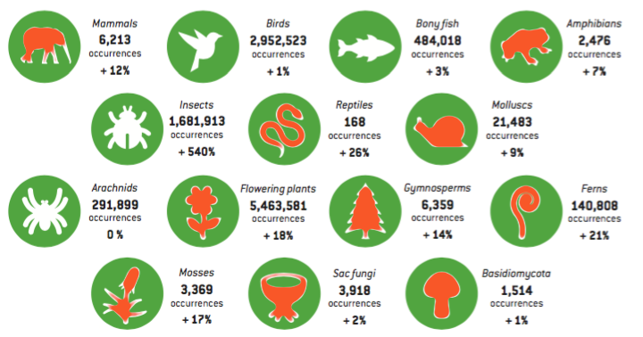

Belgian Data Gaps
GBIF Webinar, 23 March 2017
André Heughebaert, Belgian Biodiversity Platform
“the purpose of the ‘Data Gap Analysis’ is to identify discrepancies between current and ideal states (Research Data Strategy Working Group 2008) of the entire enterprise of biodiversity data management leading up to its publishing and usage (Chavan et al. 2010).”
Aims
- Assess Data published by the Belgian BIF
- Find our strengths and weaknesses
- Determine where our Data Gaps lie
Assumption
Data published from Belgium
should not differ from neighboring countries
Sources
- 2016 Country reports (Jan 2017)
- GBIF.org portal
- (GBIF webservices)
- (Occurrences downloads)
Methodology

- Use relative, NOT absolute numbers
- Compare Belgian percentages to
France, Germany and the Netherlands
(all VPs since 2001) - Strength = significantly above
- Weakness = significantly below
Topics
- Type of data
- Data completeness
- Taxonomy, geography, time distribution
- Georeferencing
- Licensing
- Indexing issues
- Data repatriation
- Multimedia
Results (1)
| BasisOfRecord |  |
|||
|---|---|---|---|---|
| Human Obs. | 72.28% | 70.22% | 69.19% | 68.90% |
| Machine Obs. | 20.54% | 0.00% | 0.00% | 0.00% |
| Specimen | 5.05% | 9.97% | 17.90% | 29.05% |
| Fossil | 0.00% | 2.67% | 0.70% | 1.68% |
Results (2)
| TaxonGroup | |
|||
|---|---|---|---|---|
| Arachnids | 2.64% | 0.65% | 0.02% | 1.40% |
| Bony fish | 4.38% | 0.28% | 1.07% | 4.13% |
| Insects | 15.21% | 9.23% | 1.88% | 10.27% |
| Mammals | 0.06% | 1.40% | 1.55% | 0.20% |
| Molluscs | 0.19% | 0.57% | 0.45% | 2.09% |
| Sac Fungi | 0.04% | 0.63% | 0.15% | 0.63% |
Results (3)
| Year | |
|||
|---|---|---|---|---|
| < 1900 | 0.25% | 0.73% | 1.38% | 1.07% |
| 1900..1924 | 0.45% | 0.70% | 0.56% | 3.06% |
| 1925..1949 | 4.78% | 7.56% | 0.44% | 5.75% |
| 1950..1974 | 11.47% | 4.13% | 0.90% | 10.59% |
| 1975..1999 | 22.50% | 22.74% | 3.25% | 41.98% |
| 2000..2017 | 58.59% | 25.64% | 11.18% | 22.56% |
Belgian gaps found
- Whenever possible, we should try mobilize:
- Specimens, Fossils and Litterature Occurrences
- under-represented taxonomic groups 
- Wallonia and abroad (Data Repatriation)
- Historical data collected before 1925
- with associated multimedia
Take Home message
- Easy exercice ( < 2 man days)
- Often confirm our feeling,
still some surprising results! - Baseline for mobilization strategy
- Opportunity to expand our network
Thank you
André Heughebaert , Belgian Biodiversity Platform
Made with reveal.js HTML presentation framework, icons by Vathanx.
This presentation is open under CC-BY-SA license.